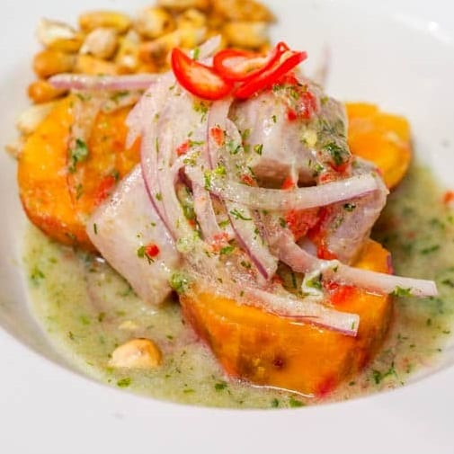
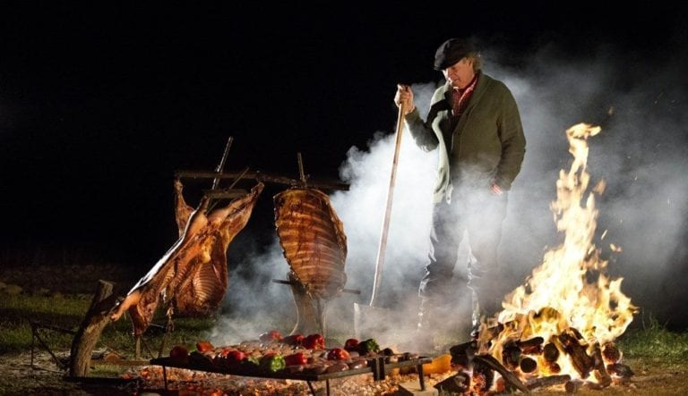
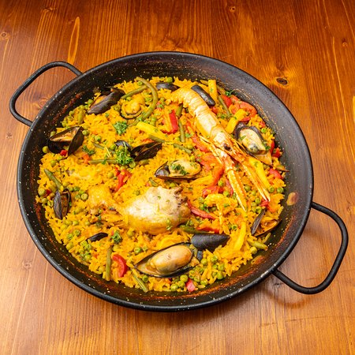

A Brief History of Ceviche
Origins and Evolution
Recipe
Recommended restaurant
Jarana 1 american Dream Wy, East Rutherford, NJ
Fusionista 14 park, Monclair , NJ
Ceviche517 517 river Dr. Garfield NJ*

A brief History of Argentinian Asado
Origins
Key Historical & Cultural Aspects:
The Gaucho Legacy: Originating in the 17th century, gauchos traveled with cattle and perfected grilling every part of the animal, often using quebracho wood for intense, smoky flavor. Techniques: Traditional methods include al asador (whole carcass on a vertical stake) or a la parrilla (over a grill).
Social Ritual: Today, the asado is a crucial weekend ritual for family and friends, managed by an asador (grill master) who prepares cuts like tira de asado (short ribs) and vacio (flank).
Evolution: While historically rustic, it adapted to include sausages (chorizo) and offal (mollejas), and spread from the rural plains into urban, high-end, and casual restaurant culture.
Asado goes beyond just food, it is a key component of Argentine social life, often seen as a bonding experience during challenging economic time
Recipe
An authentic Argentinian asado is a slow-cooked barbecue feast focusing on high-quality beef (short ribs, flank steak) and sausages, seasoned simply with coarse salt (sal parrillera) and cooked over wood or charcoal embers. Key components include tira de asado (flanken-cut ribs), vacío (flank), chorizo, and morcilla (blood sausage), served with chimichurri sauce.
Classic Argentinian Asado Recipe (Tira de Asado)
Prep Time: 15 mins Cook Time: 1-2 hours
Ingredients:* Thin flanken-cut short ribs (tira de asado), flank steak (vacio), chorizos, coarse salt. Chimichurri: Mix 1 cup parsley, 6 cloves garlic (minced), 1 tbsp oregano, 1 tsp chili flakes, 1/4 cup red wine vinegar, 1/2 cup olive oil, salt, and pepper.
Instructions:
Prepare the Fire: Light wood or charcoal, letting it burn down to hot embers. The grill should be low heat. Season: Season meat liberally with coarse salt. Grill: Place meat on the grill. Start with thicker cuts and chorizos. Grill on low heat, flipping occasionally, for roughly 45-60 minutes for medium, until fat renders. Rest: Allow the meat to rest for 10 minutes before carving. Serve: Slice and serve immediately with chimichurri.
Recommended restaurant

A Brief History of Paella
Origins
Key Historical Points
Origins: The dish emerged near Lake Albufera in Valencia, a significant rice-producing area. It was considered a peasant food, created by laborers needing a portable, filling meal.
Name Origin: "Paella" stems from the old Valencian word for the flat, wide pan used, which itself is derived from the Latin word patella.
Influences: The dish is a blend of Roman (the pan) and Arab (rice cultivation in the 8th century) influences.
Traditional vs. Modern: Traditional Paella Valenciana consists of chicken, rabbit, duck, and beans, not seafood. Seafood paella, or paella de marisco, originated later in the coastal communities of Valencia.
Cultural Significance: Traditionally cooked over an open orange-wood fire, it is a communal, social meal meant to be shared.
Recipe